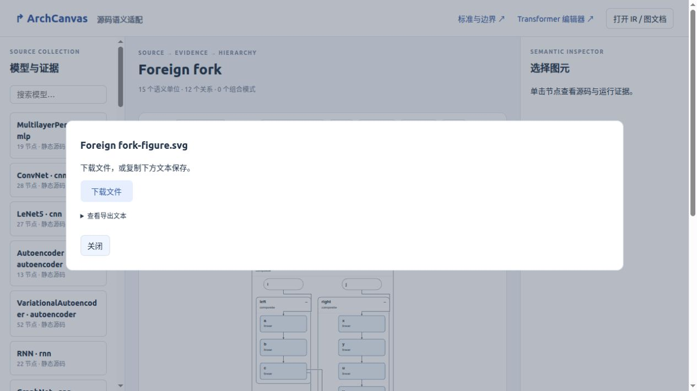

让后续节点跟随展开区域的真实出口
通用规则只调整已有下游节点的水平位置，再测量实际连线。模块归属、语义折叠状态、纵向层级、操作数和原始证据保持一致；候选退化时保留原图。
Transformer：80 图元 / 91 边，2166 × 3656 尺寸不变；交叉 48 → 47，连线总长 50203.5 → 49186.5（缩短约 2.0%）。这是固定角色状态的局部改善，整体目标尚未完成。
Transformer 底部：输出跟随右侧区域出口
Transformer-before
80 图元 · 91 边 · 48 交叉 · 线长 50203.5
Transformer-current
80 图元 · 91 边 · 47 交叉 · 线长 49186.5
ExitChain
ExitChain-before
15 图元 · 12 边 · 0 交叉 · 线长 1877
ExitChain-current
15 图元 · 12 边 · 0 交叉 · 线长 1544
UnknownFollower
UnknownFollower-before
14 图元 · 11 边 · 0 交叉 · 线长 1836
UnknownFollower-current
14 图元 · 11 边 · 0 交叉 · 线长 1516
TwoSources
TwoSources-before
14 图元 · 12 边 · 1 交叉 · 线长 2092
TwoSources-current
14 图元 · 12 边 · 1 交叉 · 线长 2092
GuardedInputs
GuardedInputs-before
17 图元 · 16 边 · 4 交叉 · 线长 6244
GuardedInputs-current
17 图元 · 16 边 · 4 交叉 · 线长 6244
拒绝的实际候选：GuardedInputs
交叉仍为 4，线长从 6244 增至 6282，因此生产输出保留原图。下面右图仅供审核候选。
GuardedInputs-current
17 图元 · 16 边 · 4 交叉 · 线长 6244
Rejected candidate
Transformer 完整固定状态
Transformer-before
80 图元 · 91 边 · 48 交叉 · 线长 50203.5
Transformer-current
80 图元 · 91 边 · 47 交叉 · 线长 49186.5
专用展开参考，仅用于评价

规则未读取模型名称、案例 ID 或参考坐标。当前通用状态下保留进一步展开能力；本阶段没有重新验证完整自适应选择，也没有验证数千节点整图的 SVG 路由和浏览器性能。
真实编辑器操作
导入 → 保存 → 重开 → 折叠 → 源码全部展开 → 恢复：15 / 15 / 10 / 15 / 15 个节点。保存重开与恢复的 SVG 字节一致。
